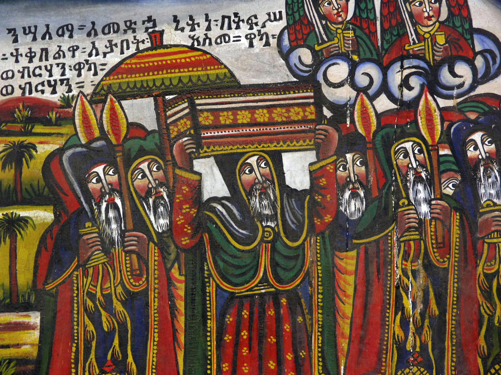
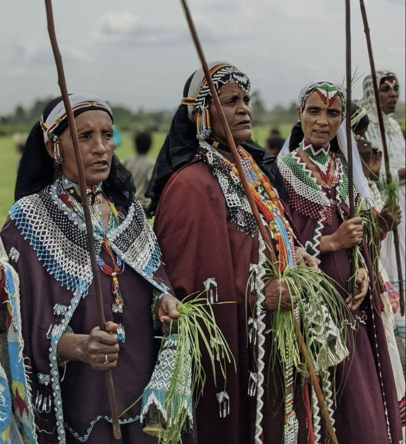
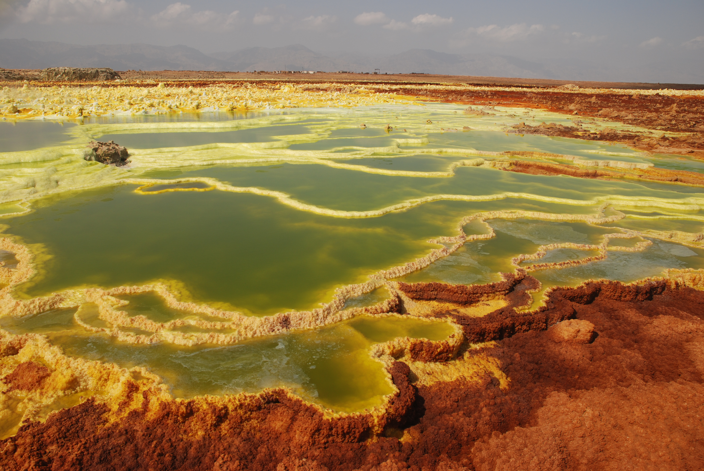

Ready to Experience Ethiopia?
Now that you know what awaits — let our experts craft the perfect itinerary for your Ethiopian adventure.
Africa's Hidden Gem
Ethiopia is unlike anywhere else on earth. It is the only African nation never colonized, a land of ancient Christian kingdoms and Islamic holy cities, of towering mountain ranges and one of the planet's most extreme geological wonders. Home to 126 million people across 90+ ethnic groups, Ethiopia is a place of astonishing diversity, extraordinary warmth, and civilizational depth that reaches back over 3,000 years.
Ethiopia stands as one of the oldest nations on earth. Human history here stretches back millions of years — Lucy (Australopithecus afarensis), the iconic 3.2-million-year-old hominid fossil discovered in the Afar region, is one of the oldest known human ancestors.
The ancient Axumite Empire (1st–7th century AD) was one of the world's great powers, trading with Rome, Persia, India, and China. Axum minted its own currency, erected towering stone obelisks, and is traditionally believed to be the resting place of the Ark of the Covenant in St. Mary of Zion Church.
Christianity arrived in Ethiopia in the 4th century AD — among the earliest adoptions in the world — giving rise to the Ethiopian Orthodox Church and its extraordinary artistic and architectural traditions, culminating in the 12th-century rock-hewn churches of Lalibela, carved directly from volcanic rock and still in active use today.
The Solomonic dynasty, which traced its lineage to King Solomon and the Queen of Sheba, ruled Ethiopia intermittently from the 13th century until Emperor Haile Selassie's reign ended in 1974. The 17th-century Royal Enclosure in Gondar — a complex of castles and palaces — stands as a testament to this era's grandeur.
Most remarkably, Ethiopia is the only African nation that successfully repelled European colonization. At the Battle of Adwa in 1896, Emperor Menelik II and his forces decisively defeated the Italian army — an event that sent shockwaves across the colonial world and made Ethiopia a symbol of African independence and dignity for generations.

The world's most famous hominid fossil, discovered in Ethiopia's Afar region in 1974, dates back 3.2 million years.
Ethiopia adopted Christianity in the 4th century AD — one of the first nations in the world — and has maintained its unique Orthodox tradition ever since.
Ethiopia's decisive victory over Italian colonial forces — the first time an African nation defeated a European colonial army in battle.

Ethiopia is one of the world's most ethnically diverse nations, home to over 90 distinct ethnic groups speaking more than 80 languages. The major groups include the Oromo, Amhara, Tigrinya, Somali, Sidama, Gurage, and the many unique tribes of the Omo Valley — among them the Mursi, Hamar, Dassanach, Banna, and Karo.
Injera & Coffee: Ethiopian cuisine centers on injera — a large, spongy sourdough flatbread made from teff — topped with rich stews (wot) of meat, lentils, and vegetables. Coffee (buna) holds a sacred place in Ethiopian culture: the traditional coffee ceremony, performed with incense and fresh grass, is a profound act of hospitality.
Music & Dance: Ethiopia has one of Africa's richest musical traditions, from the hypnotic eskista shoulder dance to the pentatonic sounds of the krar (lyre) and masenqo (one-string fiddle). Each ethnic group has its own distinct musical tradition, costume, and ceremonial dance.
Religion: Ethiopian Orthodox Christianity (practiced for 1,700 years) and Islam are the dominant faiths, each with a long history of peaceful coexistence. Ethiopia's Orthodox churches are among the holiest places in the Christian world, and the ancient walled city of Harar is one of Islam's most sacred African cities.
Ethiopia's most spectacular festival, celebrating the Baptism of Christ with processions, music, and the ritual blessing of water. Celebrated in January — most dramatically in Gondar and Lalibela.
A massive bonfire celebration in September marking the discovery of the True Cross by Queen Helena. Meskel Square in Addis Ababa fills with tens of thousands of worshippers.
Celebrated on January 7th, Genna is Ethiopia's Christmas — most famously observed in Lalibela with all-night ceremonies at the rock-hewn churches, drawing pilgrims from across the country.
Ethiopia's landscape ranges from one of the world's highest peaks (Ras Dashen, 4,550m) to one of its lowest and hottest points (the Danakil Depression, 125m below sea level). This dramatic topography has created extraordinary ecological diversity — Ethiopia is a global biodiversity hotspot.
Simien Mountains: A UNESCO World Heritage Site and one of Africa's most dramatic mountain ranges, the Simien Mountains are home to the endemic Gelada baboon (found nowhere else on earth), the Ethiopian wolf, and the Walia ibex. Sheer escarpments drop thousands of meters to the valleys below.
Danakil Depression: One of the most extreme environments on earth — average temperatures exceed 50°C (122°F) and active volcanoes bubble with neon-colored hydrothermal fields. This alien landscape is simultaneously one of the most beautiful and hostile places on the planet.
Bird Watching: Ethiopia is a paradise for birders, with over 860 species — including 19 endemics found nowhere else. The Bale Mountains, Awash National Park, and the Rift Valley Lakes are premier birding destinations.
Great Rift Valley Lakes: A chain of lakes stretching through Ethiopia hosts millions of flamingos, pelicans, and other waterbirds, alongside hippos and crocodiles along the shores.

Africa's most endangered carnivore, found only in the Ethiopian Highlands
The world's only grass-eating primate — found only in the Ethiopian Highlands
Including 19 endemics — a birding destination of global importance
One of the world's few persistent lava lakes, glowing in the Danakil night sky
Dry Season (October–May): The best time to visit. Clear skies, comfortable temperatures, and accessible roads. Highland areas are cool (10–25°C) while lowlands can be hot (30–40°C). January is particularly special for the Timkat festival.
Wet Season (June–September): The 'big rains' period. Some roads become difficult, but the landscape turns lush and green, crowds thin, and prices drop. The highlands remain accessible. Meskel (September) is one of Ethiopia's greatest festivals.
The Danakil Depression and Omo Valley are ideally visited October–March when temperatures are most bearable.
Ethiopia has a population of approximately 126 million, making it Africa's second most populous nation. Over 90 ethnic groups coexist within the country's borders, each with distinct languages, customs, and cultural traditions.
Official Language: Amharic (written in the distinctive Ethiopic script, Ge'ez). English is widely spoken in cities, tourism, and business. Oromo, Tigrinya, and Somali are also widely spoken. Our guides are multilingual — English, French, Italian, and German speakers available.
Ethiopian Orthodox Christianity and Islam together account for approximately 90% of the population, with each deeply embedded in daily life and culture.
At Churches: Remove shoes before entering. Women should cover their heads (scarves available at most sites). Dress modestly — shoulders and knees covered.
At Mosques: Remove shoes. Women should cover hair and wear loose clothing. Men should avoid shorts.
Photography: Always ask permission before photographing people, especially in rural and tribal areas. Some communities charge a small fee — this is normal and supports local livelihoods.
Ethiopians are extraordinarily hospitable. Accepting coffee or food offered by a host is a mark of respect and appreciation.
Ethiopia follows the Julian calendar with 13 months: 12 months of 30 days and one month (Pagume) of 5 or 6 days. The Ethiopian New Year falls on September 11 (or 12 in leap years). The Ethiopian calendar is currently approximately 7–8 years behind the Gregorian calendar.
Ethiopian Time: Ethiopia uses a unique 12-hour clock that begins at dawn (6:00 AM Gregorian = 12:00 Ethiopian). Noon Ethiopian time is 6:00 AM Gregorian. When arranging meetings, always clarify which time system is being used! Ethiopia is GMT+3.
The official currency is the Ethiopian Birr (ETB). Foreign currency must be exchanged at authorized banks and hotels — street exchange is illegal.
Foreign Currency Declaration: You must complete a currency declaration form upon arrival if you are bringing more than USD $3,000 in cash. Keep this form throughout your stay as it may be required when exchanging money.
ATMs are available in Addis Ababa and major cities. Credit cards are accepted at upscale hotels and some restaurants, but cash (Birr) is essential in smaller towns and rural areas. We recommend bringing USD or Euros for exchange.
Required: A valid Yellow Fever vaccination certificate is required for entry to Ethiopia.
Recommended vaccinations: Hepatitis A & B, Typhoid, Tetanus, Meningitis, Rabies (for extended stays or adventure travel).
Malaria: Malaria prophylaxis is recommended for travel to lowland areas, including the Omo Valley, Danakil Depression, and Awash. The highlands (Addis Ababa, Gondar, Lalibela, Simien) are generally malaria-free. Consult your doctor at least 4–6 weeks before departure.
Travel insurance with medical evacuation cover is strongly recommended for all visitors.
A visa is required for most nationalities to enter Ethiopia. The good news: Ethiopia offers a straightforward e-Visa system and Visa on Arrival for approximately 50+ countries including the USA, UK, European Union, Australia, Canada, China, Japan, and many more.
We recommend applying for the e-Visa at least 2–3 weeks before travel via the official Ethiopian immigration portal. Visas are typically issued within 3 business days.
Ghion Travel & Tours can assist with all visa documentation and invitation letters as needed. Please contact us well in advance of your travel dates.
By Air: Ethiopian Airlines operates an extensive domestic network connecting Addis Ababa with Bahir Dar, Gondar, Lalibela, Axum, Dire Dawa (for Harar), and many other cities. For our Historic Route tours, domestic flights are the most time-efficient option.
By Road: GTT provides well-maintained 4WD Land Cruisers for overland travel — particularly important for the Omo Valley, Simien Mountains, and Danakil Depression, where road conditions vary. Overland travel offers unparalleled access to rural Ethiopia.
We handle all domestic transportation logistics as part of your tour package.
Now that you know what awaits — let our experts craft the perfect itinerary for your Ethiopian adventure.